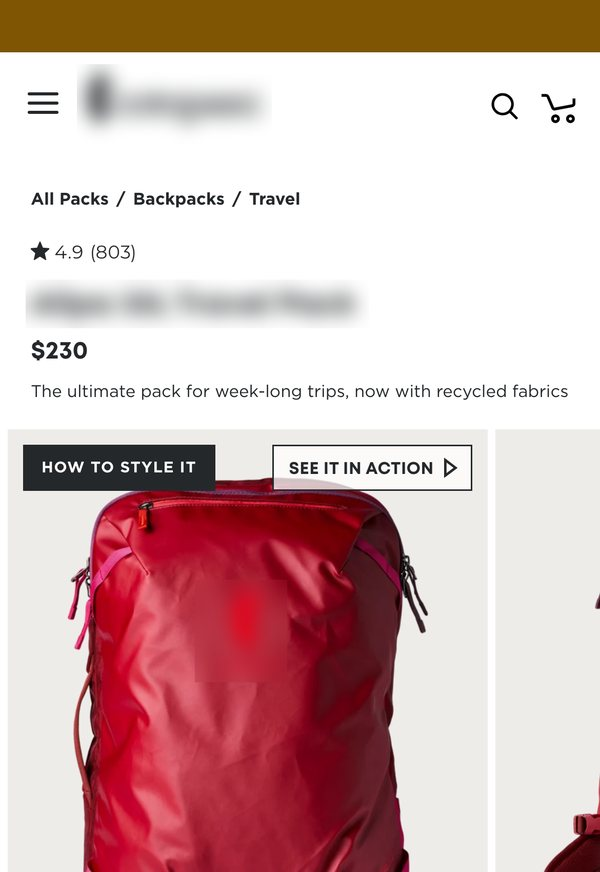
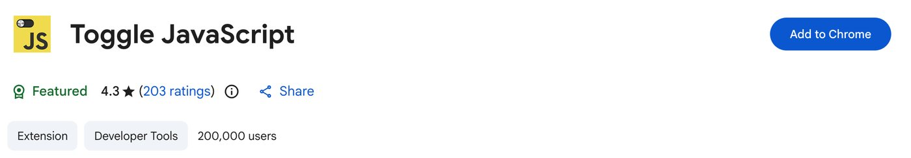
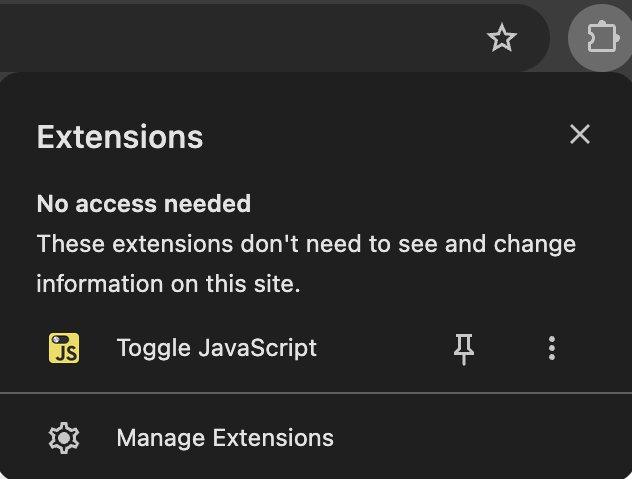

See your product page the way ChatGPT reads it.
ChatGPT, Claude and Perplexity read your page as your server sends it. Anything that loads in afterwards, like reviews, stars or specs, can be missing for them. This guide shows you how to check your own page in about two minutes.
Free. One Chrome extension. No setup.

Five steps, with the screenshots.
- The free extension we use, and where to click
- What to look for when the page reloads
- A note you can send your developer as it is
The guide opens on this page as soon as you send the form.
Check your product page in five steps.
-
1
Add the free Toggle JavaScript extension.
Open it in the Chrome Web Store and click Add to Chrome, then Add extension.
Open Toggle JavaScript in the Chrome Web Store
-
2
Pin it to your toolbar.
Chrome hides new extensions behind the puzzle piece at the top right. Click the puzzle piece, then the pin next to Toggle JavaScript. Its JS icon now sits in your toolbar.

-
3
Open your bestseller and click the JS icon.
The page reloads with JavaScript off and the icon turns red. It stays off on every site until you click it again.
-
4
What's left is roughly what ChatGPT reads.
ChatGPT's, Claude's and Perplexity's crawlers don't run JavaScript. Google's crawler does, so Gemini usually sees the full page. On the backpack page above, everything under the promo bar went blank.
-
5
Check what's gone.
If any of these vanish, ChatGPT and the others are most likely missing them too. Tick them off as you go.
Then send your developer a note like this.
Run the check on your top three products first. If something vanished, this usually takes one conversation with your developer or your reviews app. Shoppers won't see a difference.
Done? Click the JS icon again, or JavaScript stays off on every site you visit.
Want a second pair of eyes?
We check which product details AI answers judge your category on, and which of them your page states in plain text.
See the AI product-page check